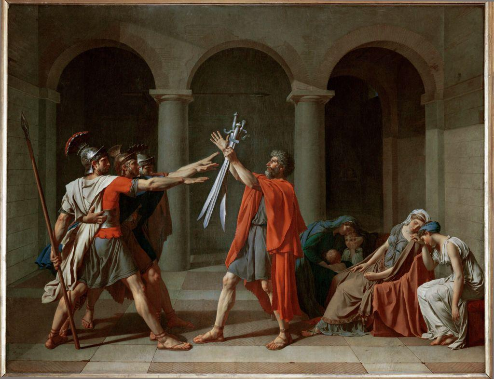
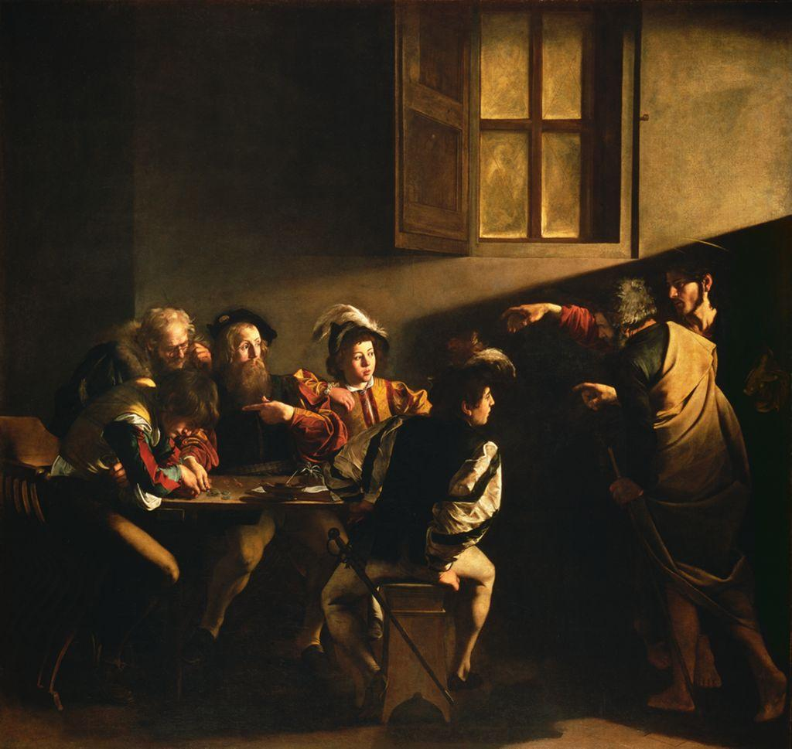

Imagine two people standing in front of the same painting. The first asks: Who painted this, and when? What was happening in the world that made someone want to paint it? What earlier art is it answering? That is the art historian. The second asks: What is going on in this picture? How is it built? What is it trying to make me feel or think, and does it succeed? That is the art critic. Same painting, two jobs.
The two depend on each other. A critic who knows nothing of a work’s history can misread it; a historian who cannot describe what is actually on the canvas is only doing paperwork. This course trains you in both, and they meet in one discipline: you describe before you explain, and explain before you judge.
Critics need a method so that snap judgments (“I like it,” “that’s ugly”) do not arrive before any looking has happened. The classic method has four steps, in this order. The order is the whole point: you earn your judgment by first proving you looked.

| DAIJ | The four-step critique method: Describe, Analyze, Interpret, Judge, in that order. |
| Describe | Naming only what is literally in the work, with no meaning or opinion. |
| Analyze | Naming how the work is organized through its Elements and Principles. |
| Interpret | Proposing what the work means, with every claim tied to visual evidence. |
| Judge | Deciding whether the work succeeds, based on the three steps before it. |

DAIJ is the spine of this entire course. Every analysis, every comparison, every museum journal you write this year will move through these four steps. Holding back your judgment until you have truly looked is a kind of patience and honesty, and it is the habit this method is here to build. Master the discipline now, with two clear paintings, and you will be ready when the works get stranger, older, and harder to read.